X237–X248¶
Line Conjugates
Intersections of line PQ with the trilinear polar of the isogonal conjugate of P (P-line conjugates of Q).
X237–X248 (Line Conjugates) — 11 representative centers (from 12 in collection) constructed on acute reference triangle \((a, b, c) = (5, 6, 7)\) with unit baseline AB = \(1\).¶
Group Preamble — Centers X237-X248 (Line conjugates)
Centers X237-X248 are line conjugates. (The P-line conjugate of Q is the point where line PQ meets the trilinear polar of the isogonal conjugate of Q.)
See Clark Kimberling and Peter J. C. Moses, Line conjugates in the plane of a triangle, Aequationes Mathematicae, August 2022.
X237-LINE CONJUGATE OF X2
X237 is the point of intersection of the Euler line and the Lemoine axis (defined as the radical axis of the circumcircle and the Brocard circle).
X238-LINE CONJUGATE OF X37
X238 = X1-line conjugate of X37

X239-LINE CONJUGATE OF X42
X239 = X1-line conjugate of X42
X240-LINE CONJUGATE OF X48
X240 = X1-Hirst inverse of X19
X241-LINE CONJUGATE OF X55
X241 = X1-Hirst inverse of X57
X242-LINE CONJUGATE OF X71
X242 = X4-Hirst inverse of X19
X243-LINE CONJUGATE OF X73
X243 = polar-circle-inverse of X226
X244-LINE CONJUGATE OF X100
X244 = crosssum of circumcircle intercepts of line X1X21
X245-LINE CONJUGATE OF X110
X245 = X1-line conjugate of X110
X246-LINE CONJUGATE OF X110
X246 = X3-line conjugate of X110
X247-LINE CONJUGATE OF X110
X247 = X4-line conjugate of X110
X248-LINE CONJUGATE OF X132
X248 = crossdifference of every pair of points on line X114X132